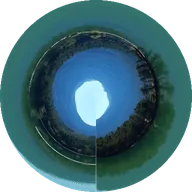

พิกัดโพลาร์

ดัดเลเยอร์รอบจุดศูนย์กลาง เปลี่ยนเส้นตรงเป็นวงกลม หรือคลี่วงกลมเป็นเส้นตรง
การตั้งค่า
| การตั้งค่า | ประเภท | ช่วงค่า | ค่าเริ่มต้น |
|---|---|---|---|
| อินเทอร์โพเลชัน | ตัวเลข | 0% ถึง 100% | 100% |
| ประเภท | ตัวเลือก | จากสี่เหลี่ยมเป็นโพลาร์, จากโพลาร์เป็นสี่เหลี่ยม | จากสี่เหลี่ยมเป็นโพลาร์ |